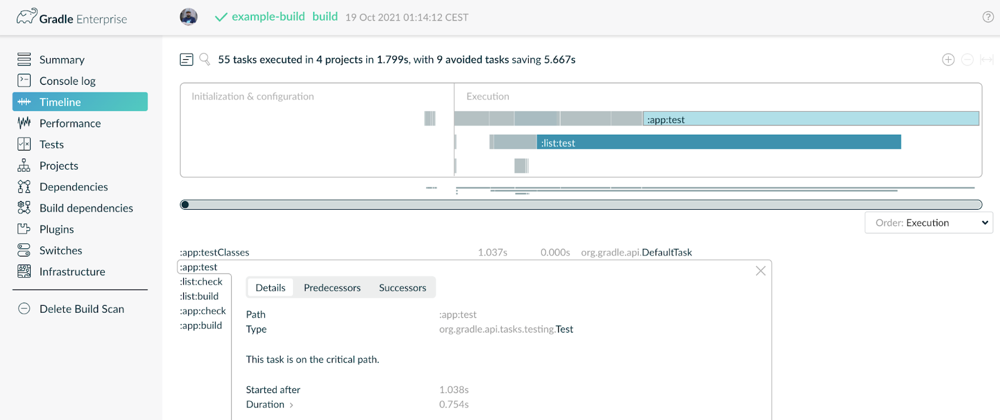

speaker {
name = "Louis Jacomet"
company = "Gradle"
joined = 2018
position = "Support Team Lead"
previously = "Dependency Management, JVM"
past = listOf(
"Terracotta / Ehcache" in 2013,
"Devoxx Belgium Committee" in 2012,
"Contractor" in 2002,
"Java 'Hello, World!'" in 1997
)
failures = generateSequence(code) { bugs }
twitter = "@ljacomet"
github = "ljacomet"
extra = "Not fully figured out how to stay out of management !?!"
}Gradle - Give your build some love, it will be returned! ❤️
Kyle Moore & Louis Jacomet
Devoxx Belgium 2022
Agenda
What is Gradle ?
JVM features
Build logic
Build(s) structure
Performance
Roadmap
Who are we?
🧑💻 🧑💻
Kyle Moore
Principal Engineer @ Gradle Inc.
Formerly LinkedIn, Guidewire Software, gosu-lang.org
Twitter, GitHub → @DPUkyle

Gradle
Since 2008, our mission is to improve developer productivity.
Software build tool under Apache license.
Top 20 in popular open source projects according to TechCrunch with nearly 30 millions monthly downloads.
Gradle Enterprise, commercial solution, is the first integrated platform for Developer Productivity Engineering (DPE)

Developer Productivity Engineering
Developer Productivity Engineering (DPE) is a software development practice used by leading software development organizations to maximize developer productivity and happiness.
|

Build Scans
Permanent record
of everything that happens in a build.


What is Gradle?
🐘
Gradle is …
A tool to automate building software
An extensible configuration model
A dependency resolution engine
A task execution engine
Various ecosystems
Core


and more …
Community


and more …
Logos from Wikimedia or from product official™ pages.
How to you use it?
Gradle Wrapper
Requires a JVM, defines the Gradle version to use, scripts take care of installation
bootstrap: gradle-initializr.cleverapps.io or an installed Gradle version and the
inittask
Usage
command line
with an IDE
How to use it ?
Extensible configuration
|
|
Task dependency resolution
Starts with the invoked task |  |
Task dependency resolution
Then connects that task with its direct task dependencies |
Task dependency resolution
Includes indirect ones, potentially from a different project |
Task execution
Never do something that was done before
|
Gradle is …
A tool to automate building software
An extensible configuration model
A dependency resolution engine
A task execution engine
JVM features
☕
A bit of everything
Version catalogs
Toolchains
Test suites
Test fixtures
Publication
Version catalogs
[versions]
groovy = "4.0.1"
lang = { strictly = "[3.8, 4.0[", prefer="3.9" } }
[libraries]
groovy-core = { module = "org.apache.groovy:groovy", version.ref = "groovy" }
groovy-json = { module = "org.apache.groovy:groovy-json", version.ref = "groovy" }
commons-lang3 = { group = "org.apache.commons", name = "commons-lang3", version.ref = "lang" }
[bundles]
groovy = ["groovy-core", "groovy-json"]
[plugins]
logging-capabilities = { id = "dev.jacomet.logging-capabilities", version = "0.10.0" }dependencies {
implementation(libs.commons.lang3)
}Version catalog features
Centralizes the list of dependencies used in a build
Coordinates and version
No classifiers, excludes or other attributes
Typed accessors
Separates:
group:artifactandversionDependency bundles
TOML or API in the Gradle
settings.
Attention points
Version information like any other
Does not force a version
Supports rich version options
Publishing and importing catalogs
Limitations
Not applicable for settings plugins
Not applicable for init scripts dependencies
Java Toolchains
Separates Java running Gradle from the one required by the project
Applies to compilation, tests and execution
Available criteria:
Java language version
JVM vendor
Implementation
Demo
Which Java does Gradle know about?
Autodetected defaults :
Per OS: Linux, macOS, Windows
Package managers: Asdf-vm, Jabba, SDKMAN!
Maven toolchains
Previous auto provisioning results
Explicit configuration
org.gradle.java.installations.fromEnvorg.gradle.java.installations.paths
Java provisioning
The following is introduced in Gradle 7.6:
toolchainManagement { (1)
jvm {
javaRepositories { (2)
repository("gradle-disco") {
resolverClass.set(DiscoToolchainResolver::class.java) (3)
}
}
}
}| 1 | New top level extension in settings.gradle(.kts) |
| 2 | You configure a list of repositories, which will be tried in declaration order |
| 3 | Each repository uses a service, registered by a plugin, that can do toolchain resolution and provisioning |
Future
More options to select your JVM
GraalVM, specific version, early access, …
Support in more tasks
Core Gradle : code analysis in 7.5 and 7.6
Community plugins: request its support
Test suites
Model a test collection: unit, integration, performance, …
Separates tests sources and dependencies
test, the Gradle Java default, is now derived from this model
Demo
Test suites evolution
Dimensions
Different Java versions to run the tests
Will result in more
Testtasks
Integration with code coverage
Has to be wired per task currently
Test fixtures
Separate test helpers from test themselves
Consume the fixtures from a dependency
Showcases the advanced dependency management engine of Gradle
Demo
Test fixtures modelling
As with test suites: sources and dependencies isolated
Part of published library
Variant in Gradle Module Metadata
classifierfor Maven / Ivy
Publishing
What is published?
A component
Its variants
Its metadata
Where is it published?
In a Maven or Ivy repository
How to publish?
Demo
What is published?
The component
Models a set of variants
Variant: consumable configuration and artifacts
javafor the Java plugins
Customizations?
Modify the component itself, not the publication
Additional artifact?
Add a variant
Metadata
No API to manipulate Gradle Module Metadata
Mutating the POM through
withXml⇒ discrepanciesLike for artifacts, modify the component!
Publishing tricks
Publication validation:
Publish on a local repository
Dependencies : Declared or resolved versions?
Publishing to Maven Central
JVM features
Version catalogs
Toolchains
Test suites
Test fixtures
Publication
Build logic
🧰
Building blocks
A build configuration file:
settings.gradle(.kts)Configuration file per project:
build.gradle(.kts)Additional files:
gradle.propertiesgradle/wrapperVersion catalogs
*.versions.tomlAnd more …
Implementation languages

Build scripts vs. Plugins
Configuration
Build scripts are declarative
Conventions
Local build plugins implement the build configuration logic
plugins.gradle.org
Build logic can leverage external plugins
Writing plugins
A Gradle plugin is built by a Gradle build
Plugin development plugins for:
| Build script of a plugin in Java
Build script of a plugin in Groovy
Build script of a plugin in Kotlin
|
Programming model
Don’t call us, we’ll call you! Abstract types, instantiated and decorated by Gradle Injected Gradle Services | Something.groovybuild.gradle |
Plugins
Plugin types
| Script equivalents
|
MyPlugin.javaclass MyPlugin implements Plugin<Project> {
@Override
public void apply(Project project) {
/* ... Uses the Gradle API ... */
}
}Precompiled script plugins
Plugins written using the Gradle DSL
Located in a SourceSet
src/main/kotlin/com.example.my-plugin.gradle.kts
src/main/kotlin/com.example.my-plugin.settings.gradle.kts
src/main/groovy/com.example.my-plugin.init.gradleWriting tasks
Tasks are functions
What are the task inputs? What are the task outputs? What happens when input or output change? |
Incrementality test
Launch a build
Launch another build without making any change
All tasks should be
UP-TO-DATE
Caching test
Activate build cache
Prepare two copies of the same project in different folders
In the first location, launch the build
In the second location, launch the build
Tasks from the second build should be
FROM-CACHE
Writing tasks
Executed each time MyTask.kt |
MyTask.kt
|
Cached tasks
MyTask.kt@CacheableTask (1)
abstract class MyTask : DefaultTask() {
@get:InputFiles
@get:PathSensitive(RELATIVE) (2)
abstract val inputs: ConfigurableFileCollection
@get:OutputDirectory
abstract val output: DirectoryProperty
@TaskAction
fun action() {
/* ... */
}
}| 1 | Declare task implememation as cacheable |
| 2 | Specifies input path sensitivity |
Writing tasks
Many opt-ins to consider
Gradle can help by validating plugins and tasks
At runtime → warnings / failures / deprecations
While developing plugins →
:validatePlugins
Validation evolves by checking more and more things while preserving compatibility
Build code is production code
Image credit Brendan Connolly |
Demo
Unit tests
ProjectBuilder
To test interactions with the configuration model
Only for Project
Does not allow:
task invocation
resolving configurations
Integration tests
Gradle TestKit
To test complete builds
Execute a real Gradle build
Exposes Gradle output and task results to make assertions
Supporting multiple Gradle versions
Test multiple Gradle versions
No built-in support in Gradle (yet)
Relatively easy to roll out
Supporting multiple Gradle versions in practice
build.gradle.ktslistOf("5.0", "6.0", "7.0", "7.4.2").forEach { testedVersion -> (1)
val taskName = "testGradle${testedVersion.replace(".","_")}"
val testTask = tasks.register<Test>(taskName) {
classpath = tasks.test.get().classpath
/* ... */
systemProperty("testedGradleVersion", testedVersion) (2)
}
tasks.check { dependsOn(testTask) }
}| 1 | List tested Gradle versions |
| 2 | Inject System Property that the tests can leverage |
AbstractIntegrationTest.ktGradleRunner.create().withGradleVersion(System.getProperty("testedGradleVersion"))Built-in support in the future thanks to test suites and dimensions
Build(s) structure
🗃
One or more projects
One build contains one or more projects
Build settings are used to
declare build participants
configure common elements
projectstask to list the projects of a build
Build structure
Handle it like any piece of code
Do not repeat yourself
Build abstractions
In short, apply good development practices
Think about your future self
Opening a project should give you the important information
Too much centralisation can hurt readability
Demo
Convention plugins
Orchestrate applied plugins
Configure defaults for you, your project, your company
Inside the project or published
buildSrc convention
Content is visible for project configuration
All projects see all the content of
buildSrcAny change invalidates all projects
Composite builds
Mix independent builds
One main build and one or more included builds
Gradle connects all the pieces
Replaces the use of local publications
Build logic in composites
Same base as regular composites
The included build contributes … build logic
More targeted than
buildSrc
Demo
Mono vs. Multi repository
Decision that you own
Gradle is agnostic to that difference
In both case, you can have multiple builds
That you assemble as composites
Performance
🚀
Performance

Performance

A rapid build is
Less time waiting
Reduce context switching
Stay in the zone longer
Science, not sentiment
|

Build Scans
Permanent record of what a build did
gradle-profiler
Scenarios based on what developers / CI is doing
Configuration time
Incremental build
IDE synchronisation
Run benchmarks regularly to prevent regressions
Profiling to identify bottlenecks
Performance elements in Gradle
Parallel building
Memory management
Parallel building
Maximum parallelism
--max-workers=16Dependencies downloads
Tasks leveraging the Worker API
Parallelism between projects
--parallelParallel test execution
tasks.test { maxParallelForks = 16 }
Memory management
A build is at least two Java processes
with default memory parameters
Gradle Client
UI (CLI/IDE) and communication with the daemon
-Xmx64m
Gradle Daemon
Configures et executes the build
-Xmx512m -XX:MaxMetaspaceSize=256m
Some tasks use other processes
-Xmx512m -XX:MaxMetaspaceSize=256m
Memory management
Understand that there is a memory problem
Build too slow
Expiring Daemon because JVM heap space is exhaustedBuild Scans show memory pressure
gradle-profilerto capture allocations
Memory management
Change memory parameters
Gradle CLI - rarely needed
Environment variable
JAVA_OPTSJAVA_OPTS="-Xmx64m -XX:MaxPermSize=64m -XX:+HeapDumpOnOutOfMemoryError -Dfile.encoding=UTF-8"Gradle Daemon
gradle.propertiesorg.gradle.jvmargs=-Xmx2g -XX:MaxMetaspaceSize=512m -XX:+HeapDumpOnOutOfMemoryError -Dfile.encoding=UTF-8Tasks, like
Testbuild.gradle.ktstasks.test {
maxHeapSize = "1G"
}Configuration Cache Principles
Caches the result of the configuration and computation of the task graph, and reuse it for subsequent builds.
Detects build logic inputs for invalidation
Task isolated from the mutable model and from each other
Configuration Cache Benefits
When nothing changed, the whole configuration phase is skipped
Less memory pressure because the build model can be garbage collected
Executes all tasks in parallel (incl. intra-projects)
Configuration Cache
Demo
Configuration Cache Constraints
On configuration logic
Environnement, configuration files, external processes (like
git) …Build listeners registered at configuration, notified during execution
Configuration Cache Constraints
On execution logic
No references to build model during task execution
likeProject,Task…No live objects in inputs
likeInputStream,Socket…
Configuration Cache Strength
Forces good practices
Clear separation between configuration and execution
Correct declaration of inputs
No cross-dependencies between tasks
Configuration Cache
The Core JVM plugins are compatible
not all others are yet [doc]
Kotlin and Android plugins are compatible
More and more community plugins are compatible gradle/gradle#13490
Configuration Cache
Current Roadmap
incubating ⇒ stable in Gradle 8.x
(and opt-in)Activated by default in Gradle 9.0?
(with opt-out)Only mode Gradle x.x
(without opt-out)
Configuration Cache
Cache the result of configuration and computation of task graph, which is then reused for subsequent builds
Worth the effort
You can start adopting right now
Performance
|
Roadmap
📃
Now a GitHub project
Illustrates the high level changes coming to Gradle
Feedback on the #roadmap channel in Gradle Community Slack
Questions
❓